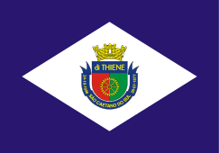

Hino de São Caetano do sul

Caetano pequeno gigante
Sob um céu estrelado e de anil
És cidade, trabalho, és progresso
És infante do nosso Brasil.
Do passado nos resta lembrança
De herois que souberam te erguer
Para frente, para frente
São Caetano, tu tens que crescer.
Do triângulo, joia rara
Dá exemplo de teu vigor
E tua luta não para
É grande o teu valor. (Bis)
Mais e mais chaminés se levantam
Apitos fazem-se ouvir
Do trabalho é tua glória
De grandeza será teu porvir.
No futuro será monumento.
Brasil saberá te eleger
Para frente, para frente
São Caetano, tu tens que crescer.
Do triângulo, joia rara
Dá exemplo de teu vigor
tua luta não para
É grande o teu valor. (Bis)